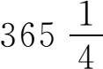
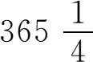

4．埃及人对数学的使用
埃及人用数学来管理国家和教会的事务，确定付给劳役者的报酬，求谷仓的容积和田地的面积，征收按土地面积估出的地税，从一种度量单位换算成另一种度量单位，计算修造房屋和防御工程所需的砖数。草片文书中还有一些问题，计算酿造一定量啤酒所需的谷物数量，以及用一种出酒率与他种谷物之比为已知的谷物酿出与他种谷物同样的酒所需的数量。
同巴比伦人一样，埃及数学的一个主要的用途是天文，这是从第一朝代就开始做的。尼罗河是埃及人的生命源泉，他们靠耕种尼罗河每年泛滥的淤土所覆盖的田地谋生。但他们也得准备好应付洪水的危害，他们得把家、农具和耕畜暂时迁至别处，并做好安排，使洪水过后能立即播种。因此就得预报洪水到来的日期，这就要知道洪水到来前的天文现象。
有了天文学才可能有历法。除了在商业上的需要之外，预报宗教节日也需要历法。他们认为，为要求得天神保佑，节日必须按时庆贺，同巴比伦人一样，历法是由教士来管的。
埃及人靠观察天狼星算得太阳年的日子数。这颗星在夏季的某一天可在太阳快出来的时候在地平线上看到。在其后一些日子里，在太阳升起以前可以在较长的时间里看到它。把在太阳快升起时能看到它的那第一天，叫做天狼星的先阳升日（heliacal rising of Sirius），两个先阳升日之间大约相隔

天；因此埃及人（一般认为是在公元前4241年）采用以365日为一年的民历。他们之所以集中观察天狼星，无疑是因为尼罗河水在那天开始上涨，而那天也就被选定为一年的第一天。他们把365天的一年分为12个月，每月30天，年末外加5天。因埃及人没有在每四年内加插一天，他们的民历就要慢慢落后于季节。这种民历需要经1460年之后才能又符合季节；这段时期叫索特周期（Sothic cycle），这是因为埃及人称天狼星为索特。但埃及人是否知道索特周期是有疑问的。他们的历法在公元前45年为凯撒（Julius Caesar）所采用，但他采纳亚历山大城希腊人索西吉斯（Sosigenes）的建议，把一年改为

天。埃及人虽在定出一年的天数和历法上作出了有价值的贡献，但这并不是由于他们的天文学高明，实际上他们的天文学是粗浅的，并且远不如巴比伦人的天文学。埃及人把他们的天文知识和几何知识结合起来用于建造他们的神庙，使一年里某几天的阳光能以特定方式照射到庙宇里。例如他们把某些庙宇修成这样，使一年中白昼最长的那天，阳光能直接进入庙宇，照亮祭坛上的神像。巴比伦人和希腊人也在某种程度上按这种方式确定庙宇的方向和位置。金字塔的方位也朝向天上特定的方向，而斯芬克斯（即狮身人面像。——译者）的面则是朝东的。虽则这些工程的修建细节对我们无关宏旨，但值得指出的是，金字塔代表埃及人对几何的另一种用法。金字塔是帝王的陵墓；因埃及人相信灵魂不灭，所以他们相信合适修造陵墓对死者的阴间生活大有影响。事实上，每个金字塔里都专设一间房，供帝王和王后死后居住。他们竭力使金字塔的底有正确的形状；底和高的尺寸之比也是意义非常重大的。但我们不应把有关工程的复杂性或想法的深奥性过分强调。埃及人的数学是简单粗浅的，并不像过去经常有人宣称的那样包含着深刻的原理。